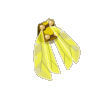
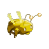
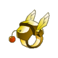
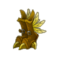
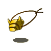
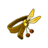
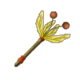

Menu barbok'you

| Niveau 58 | Scaracapes Dorée | ||
|---|---|---|---|
| Recettes : | Caractéristiques : | Conditions : | |
|  | 1 Scaracape verte 1 Scaracape bleue 1 Scaracape noire 1 Aile du scarabosse doré 1 Scaracape rouge 1 Scaracape blanche |
+6 à 55 vitalité +6 à 20 sagesse +1 à 4 dommages +1 portée +1 à 200 initiative |
aucune |
| Remarques : | |||
| Niveau 58 | Scaracoiffe Dorée | ||
|---|---|---|---|
| Recettes : | Caractéristiques : | Conditions : | |
|  | 1 Scaracoiffe blanche 1 Scaracoiffe bleue 1 Scaracoiffe noire 1 Scaracoiffe rouge 1 Scaracoiffe verte 1 Antennes du scarabosse doré |
+6 à 30 intelligence +6 à 30 agilité +1 à 5 CC +1 à 2 créa. invocables +1 à 10 prospection 1 à 5% résistance neutre |
aucune |
| Remarques : | |||
| La scaracoiffe dorée se drop sur scarafeuille dorée, à la fin du donjon scara | |||
| Niveau 43 | Anneau du Scarabosse Doré | ||
|---|---|---|---|
| Recettes : | Caractéristiques : | Conditions : | |
|  | 1 Scaranneau vert 1 Ailes du scarabosse doré 1 Scaranneau blanc 1 Scaranneau bleu 1 Scaranneau noir 1 Scaranneau rouge |
+1 à 4 soins +1 à 4 dommages |
aucune |
| Remarques : | |||
| L'anneau du scarabosse dorée se drop sur scarafeuille dorée, à la fin du donjon scara | |||
| Niveau 54 | Scarabottes Dorées | ||
|---|---|---|---|
| Recettes : | Caractéristiques : | Conditions : | |
|  | 10 Ailes de scarafeuille blanc 10 Ailes de scarafeuille bleu 10 Ailes de scarafeuille rouge 10 Ailes de scarafeuille vert 10 Ailes du scarafeuille noir 1 Ailes du scarabosse doré |
+1 PM +1 à 8 sagesse +2 à 3 résistance air +1 à 2 résistance feu +1 à 3 résistance terre +1 à 2 résistance eau |
aucune |
| Remarques : | |||
| Les scarabottes dorées se drop sur scarafeuille dorée, à la fin du donjon scara | |||
| Niveau 45 | Amulette du Scarabosse Doré | ||
|---|---|---|---|
| Recettes : | Caractéristiques : | Conditions : | |
|  | 20 Antenne du scarafeuille rouge 20 Antenne du scarafeuille vert 20 Antenne du scarafeuille bleu 20 Antenne du scarafeuille blanc 1 Ailes du scarabosse doré |
+6 à 15 intelligence +6 à 45 vitalité +6 à 15 sagesse +1 à 3 soins |
aucune |
| Remarques : | |||
| L'amulette du scarabosse dorée se drop sur scarafeuille dorée, à la fin du donjon scara | |||
| Niveau 51 | Scarature Dorée | ||
|---|---|---|---|
| Recettes : | Caractéristiques : | Conditions : | |
|  | 1 Scarature blanche 1 Scarature bleue 1 Scarature noire 1 Scarature rouge 1 Scarature verte 1 Ailes du scarabosse doré |
+6 à 55 vitalité +6 à 30 agilité +1 à 3 soins +1 à 3 résistance eau +1 à 3 résistance air +1 à 3 résistance feu +1 à 3 résistance terre |
aucune |
| Remarques : | |||
| La scarature dorée se drop sur scarafeuille dorée, à la fin du donjon scara | |||
| Niveau 59 | Baguette du Scarabosse Doré | |||
|---|---|---|---|---|
| Recettes : | Effets : | Caractéristiques : | Conditions : | |
|  | 2 Carapace de scarafeuille rouge 2 Carapace de scarafeuille blanc 2 Carapace de scarafeuille bleu 2 Carapace de scarafeuille vert 1 Ailes du scarabosse doré 1 Antennes du scarabosse doré |
PDV rendu : 11 à 30 +1 à 3 soins +6 à 20% dommages |
PA : 4 Portée : 2 à 4 Bonus CC : +10 Critique : 1/30 Echec : 1/60 |
aucune |
| Remarques : | ||||
| La baguette du scarabosse dorée se drop sur scarafeuille dorée, à la fin du donjon scara | ||||
| 1 Items | Aucun bonus |
|---|---|
| 2 Items | +20 Vitalité / +1 Dommages / +1 Soins |
| 3 Items | +30 Vitalité / +2 Dommages / +2 Soins |
| 4 Items | +40 Vitalité / +3 Dommages / +3 Soins |
| 5 Items | +50 Vitalité / +4 Dommages / +4 Soins / +20 Sagesse |
| 6 Items | +60 Vitalité / +5 Dommages / +5 Soins / +40 Sagesse |
| 7 Items | +80 Vitalité / +10 Dommages / +10 Soins / +60 Sagesse |
Dofus est un MMORPG édité par Ankama." Barbok " est un site non-officiel sans aucun lien avec Ankama.
Toutes les illustrations sont la propriété d'Ankama Studio et de Dofus. Le contenu de ce site a été rédigé initialement par Immortal, il ne s'agit que d'une remise en ligne effectuée par Eternal Games.